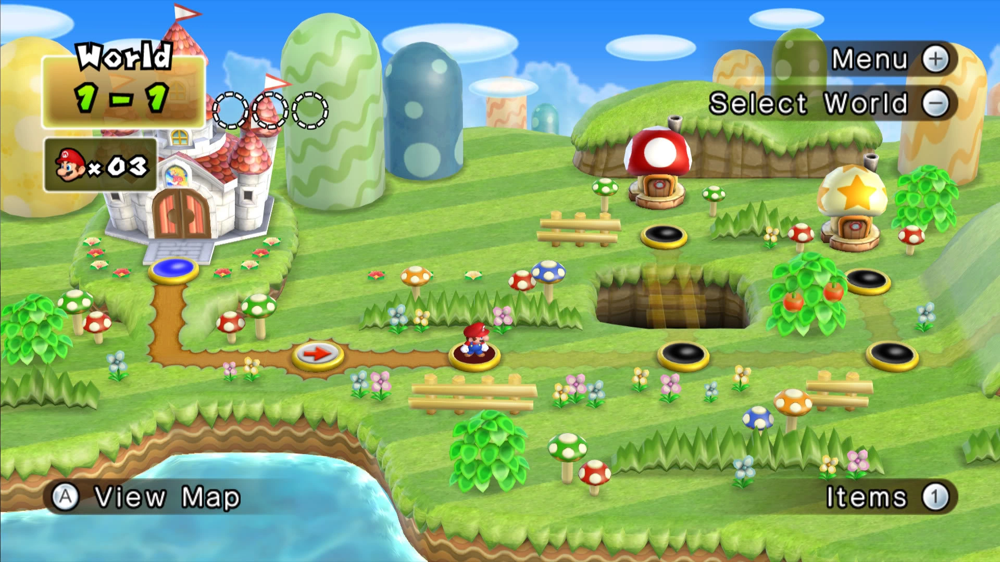

Native game logic
Build on existing static recompilation research instead of running a virtual Wii CPU in the browser.
An independent engineering project exploring how to bring New Super Mario Bros. Wii to a modern browser through native recompilation — not console emulation.
A glimpse of what we're working towards
This is a visual reference for the intended experience — it is not gameplay from a functioning web port.

Built differently, from the inside out
The aim is to translate the game's original PowerPC logic into code that can run directly inside WebAssembly, then bridge its systems to the browser.
Build on existing static recompilation research instead of running a virtual Wii CPU in the browser.
Adapt rendering, input, audio and memory handling for browser APIs such as WebGPU and WebAssembly.
Prepare assets privately from your own game copy, then launch the eventual port on localhost.
A transparent look at progress. The goal is authentic browser gameplay, but substantial platform work remains.
Explore the original recompilation workMade for the joy of figuring out how things work.
Back to top ↑